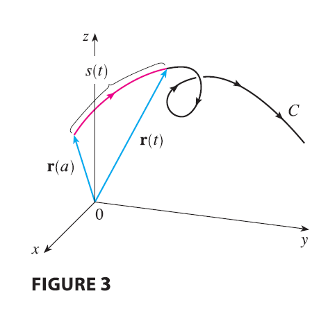

A single curve C can be represented by more than one vector function. For instance, the twisted cubic \[ \mathbf{r}_1(t) = \langle t, t^2, t^3 \rangle \qquad 1 \le t \le 2 \tag{4} \] could also be represented by the function \[ \mathbf{r}_2(u) = \langle e^u, e^{2u}, e^{3u} \rangle \qquad 0 \le u \le \ln 2 \tag{5} \] where the connection between the parameters \(t\) and \(u\) is given by \(t=e^u\). We say that Equations 4 and 5 are parametrizations of the curve C. If we were to use Equation 3 to compute the length of C using Equations 4 and 5, we would get the same answer. In general, it can be shown that when Equation 3 is used to compute arc length, the answer is independent of the parametrization that is used.
Now we suppose that C is a curve given by a vector function \[ \mathbf{r}(t) = f(t)\mathbf{i} + g(t)\mathbf{j} + h(t)\mathbf{k} \qquad a \le t \le b \] where \(\mathbf{r}'\) is continuous and C is traversed exactly once as \(t\) increases from \(a\) to \(b\). We define its arc length function s by
\[ s(t) = \int_a^t |\mathbf{r}'(u)| du = \int_a^t \sqrt{\left(\frac{dx}{du}\right)^2 + \left(\frac{dy}{du}\right)^2 + \left(\frac{dz}{du}\right)^2} du \tag{6} \]
Thus \(s(t)\) is the length of the part of C between \(\mathbf{r}(a)\) and \(\mathbf{r}(t)\). (See Figure 3.) If we differentiate both sides of Equation 6 using Part 1 of the Fundamental Theorem of Calculus, we obtain

\[ \frac{ds}{dt} = |\mathbf{r}'(t)| \tag{7} \]
It is often useful to parametrize a curve with respect to arc length because arc length arises naturally from the shape of the curve and does not depend on a particular coordinate system. If a curve \(\mathbf{r}(t)\) is already given in terms of a parameter \(t\) and \(s(t)\) is the arc length function given by Equation 6, then we may be able to solve for \(t\) as a function of \(s\): \(t = t(s)\). Then the curve can be reparametrized in terms of \(s\) by substituting for \(t\): \(\mathbf{r} = \mathbf{r}(t(s))\). Thus, if \(s=3\) for instance, \(\mathbf{r}(t(3))\) is the position vector of the point 3 units of length along the curve from its starting point.
EXAMPLE 2 Reparametrize the helix \(\mathbf{r}(t) = \cos t \mathbf{i} + \sin t \mathbf{j} + t \mathbf{k}\) with respect to arc length measured from \((1, 0, 0)\) in the direction of increasing \(t\).